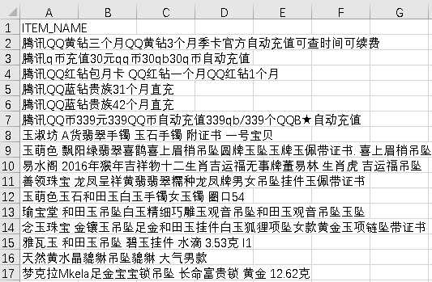

帮助文档
1.软件名称
商品文本分类(Commodity Text Classfication)
2.软件功能
2.1 单条分类
在单条数据分类对应的文本输入框内输入商品名称，然后点击“单个数据分类”按钮，等待模型识别，识别结束后将跳转界面，输出分类结果。若要进行下一次分类，请点击“返回”按钮，重复执行上述操作。
2.2 批量分类
批量分类时，需要选择待识别的文件(该软件仅支持'.txt','.tsv'两种格式的文件，若选择其他格式的文件，软件将给出错误提示)，合法的文件格式为，第一行单独一行为"ITEM_NAME"表示标题(不包含其他分隔符，若文件的内容格式不正确，软件将会给出错误提示，具体内容格式如下图所示)，随后的每一行表示一件商品的名称。待选择正确格式内容的文件之后，点击"批量数据分类"按钮，等待模型识别，识别结束后将跳转界面，输出文件中前200条数据的分类结果。最终识别结果的文件将保存在工程文件夹中的'./result/'文件夹下面。

3.支持浏览器
Microsoft Edge 41.16299.967.0+、Firefox66.0.1+、Chrome72.0.3626.96+